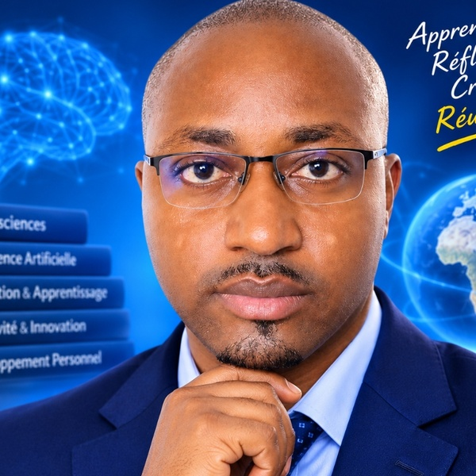

Je suis Merlin SIMO, observateur des dynamiques cognitives, passionné par les mécanismes de l'intelligence humaine, bâtisseur de systèmes et praticien de l'apprentissage méthodique.
Je défends une conviction fondamentale : l'esprit humain possède une remarquable capacité d'adaptation, d'apprentissage et de transformation. Mais son potentiel ne s'exprime pleinement ni par hasard ni par la simple accumulation de connaissances. Il se développe grâce à la curiosité, à l'entraînement, à la méthode et à la volonté d'expérimenter.
Mon travail consiste à explorer ces mécanismes et à les transformer en méthodes concrètes, accessibles et applicables dans la vie quotidienne.
UNE TRAJECTOIRE ENTRE RIGUEUR, TECHNOLOGIE ET EXPLORATION INTELLECTUELLE
Mon parcours s'est construit à la croisée de plusieurs univers.
Issu d'une formation universitaire en Sciences Juridiques et Politiques, avec une dominante en droit public et sciences pénales, j'ai développé une culture de l'analyse, de la rigueur argumentative, de l'observation et de la vérification.
Mon expérience dans les fonctions régaliennes et les domaines de la sécurité a renforcé cette approche. Elle m'a appris à examiner les situations avec méthode, à identifier les risques, à distinguer les faits des suppositions et à rechercher des solutions efficaces face aux problèmes concrets.
En parallèle, ma passion pour l'informatique m'a conduit vers la programmation, le développement logiciel, notamment avec Python, Node.js et Flutter, ainsi que vers l'intelligence artificielle et l'automatisation.
Je considère la technologie non comme une simple commodité, mais comme un formidable instrument d'exploration, de création et de résolution des problèmes humains.
Cette rencontre entre rigueur analytique, sciences cognitives et technologies constitue aujourd'hui le socle de ma démarche.
UNE PHILOSOPHIE : L'INTELLIGENCE SE CULTIVE
Je suis convaincu que la créativité, la mémoire, l'attention, la capacité d'apprentissage et l'esprit critique ne doivent pas être considérés comme des qualités figées, réservées à quelques individus.
Ces capacités peuvent être développées et entraînées.
C'est pourquoi je m'intéresse particulièrement à plusieurs domaines :
- La mémoire et l'apprentissage : comprendre comment nous acquérons, organisons et retenons les connaissances.
- La créativité : apprendre à produire des idées, à sortir des raisonnements habituels et à imaginer de nouvelles solutions.
- L'attention et la concentration : mieux maîtriser ses ressources mentales dans un environnement saturé de distractions.
- La pensée critique : analyser les informations, remettre en question les évidences et construire des raisonnements solides.
- La productivité intellectuelle : transformer les connaissances en compétences et les intentions en réalisations.
- L'intelligence artificielle : explorer les possibilités offertes par les nouvelles technologies pour apprendre, créer et travailler autrement.
L'INSPIRATION WILY WALNUT ET LE RENOUVEAU ÉDITORIAL
Ma démarche éditoriale s'inspire librement de l'esprit d'initiatives comme Wily Walnut, qui ont contribué à populariser la gymnastique mentale, les exercices de réflexion et le développement des capacités intellectuelles.
Mon ambition est de prolonger cet esprit dans une approche contemporaine, plus structurée et davantage tournée vers l'application pratique.
Ici, pas de recette magique, de raccourci miraculeux ou de promesse de réussite sans effort.
Nous privilégions l'exploration des mécanismes cognitifs, les connaissances issues de la recherche, les exercices pratiques et l'expérimentation personnelle.
Comment vaincre la paralysie de la perfection ?
Comment entraîner son cerveau à produire des idées nouvelles ?
Comment apprendre plus efficacement et retenir durablement ?
Comment développer son attention dans un monde de distractions ?
Comment transformer une curiosité en projet concret ?
Comment passer d'une idée imparfaite à une réalisation aboutie ?
Ce sont autant de questions auxquelles nous cherchons à apporter des réponses accessibles et applicables.
UNE MISSION : TRANSFORMER LA CONNAISSANCE EN CAPACITÉ D'ACTION
Je ne souhaite pas simplement transmettre des informations.
Je souhaite aider chacun à développer une meilleure compréhension de ses propres capacités, à acquérir des méthodes de travail intellectuel et à devenir davantage acteur de son apprentissage.
À travers des articles, des guides pratiques, des exercices, des programmes d'entraînement et, progressivement, des outils numériques intelligents, mon objectif est de rendre le développement intellectuel plus concret, plus accessible et plus stimulant.
Je m'adresse aux curieux, aux autodidactes, aux étudiants, aux professionnels, aux créateurs et à toutes les personnes qui refusent de considérer leurs capacités actuelles comme leurs limites définitives.
« La créativité n'est pas un don accordé par miracle à quelques élus. La mémoire n'est pas une faculté condamnée à décliner sans que nous puissions agir. L'intelligence n'est pas une destination, mais une capacité qui se cultive. »
MA CONVICTION
Ne vous contentez pas d'apprendre davantage. Apprenez à mieux penser, à mieux comprendre, à mieux créer et à mieux agir.
Merlin SIMO